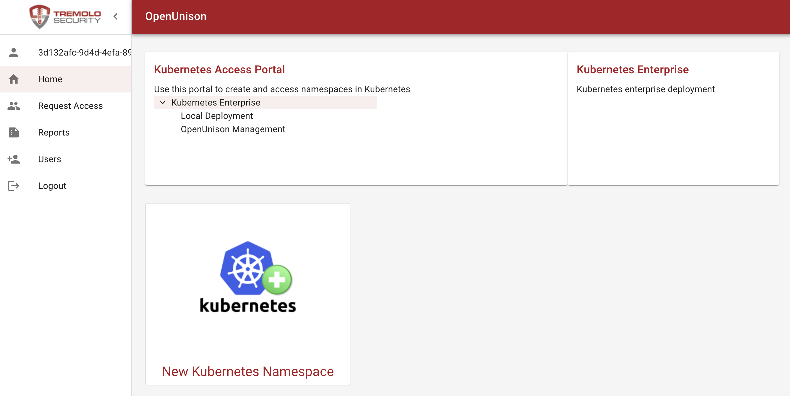

Namespace as a Service
Introduction
The OpenUnison Namespace as a Service (NaaS) portal gives your users control of their own corner of their cluster without involving cluster operations in the creation or access management for their Namespace. What makes OpenUnison unique is that:
- You can write objects either directly to the API server or to a git repository to support a GitOps workflow to
Namespacecreation - The NaaS portal can be applied to existing clusters to get immediate self service access
- Collect additional metadata
- Approvals can be customized and automated, for instance instead of always requiring an approval for a new
Namespaceyou can have it automatically approved in certain situations - Support for "Day 2" operations such a resizing quotas and providing access to namespaces without running the kubectl command
- Provisioning of non-Kubernetes resources, such as pipelines, git repos, etc.
There are three modes for using the OpenUnison NaaS to authorize access to a cluster:
- OpenUnison Managed Groups - All groups are stored by OpenUnison with access managed internally by OpenUnison. This gives you the most flexability in how your users access your cluster without any kind of outside dependencies.
- Externally Managed Groups - When a user requests a
Namespacebe created, they specify groups from their identity provider. Whenver a user logs in to use the cluster they're able to access namespaces based on their external identity. - Hybrid - When a
Namespaceis requested, both internally managed groups and external groups are used.
Of the three potential approaches, the Hybrid approach is the most popular. This gives you the ability to use existing groups for majority of access while still letting OpenUnison support exceptions that always seem to be required. The next section provides the details as to what the Namespace creation process entails and what gets created.
Namespace Creation Process
From a systems' perspective, the default Namespace creation process will create:
| Object | Location | Description |
|---|---|---|
Namespace |
Kubernetes or Git | The requested Namespace |
Admin RoleBinding(s) |
Kubernetes or Git | RoleBinding for the admin ClusterRole. One RoleBinding is created for each of external and internal groups depending on which authorization model is used. |
View RoleBinding(s) |
Kubernetes or Git | RoleBinding for the view ClusterRole. One RoleBinding is created for each of external and internal groups depending on which authorization model is used. |
| Approval Group | Database | This group is used to determine who can approve access to the Admin and View roles. The requester of the Namespace is added as the first user. |
| Namespace Admin Group(s) | Database | A group for internal and/or internal is created in the database to manage access to the Admin role for the Namespace |
| Namespace View Group(s) | Database | A group for internal and/or internal is created in the database to manage access to the View role for the Namespace |
If using git to provision objects, in addition to the above being provisioned into Git, the following objects are created:
| Object | Location | Description |
|---|---|---|
Git Secret |
Kubernetes | An SSH private key used by OpenUnison to interact with the git repository that is responsible for supporting the new Namespace |
This provides the most basic Namespace capabilities. You can customize this workflow to add ResourceQuota objects, additional roles, or additional metadata you may use to track charge-back.
Deploying The NaaS Portal
Before You Deploy
Before moving forward, you will need two additional components are required:
- Relational Database - MySQL, MariaDB, PostgreSQL, and MS SQL Server are all supported
- An SMTP server for notifications
Testing MariaDB
If you need a simple database implementation for testing, this MariaDB deployment can be used. If you use this database, use the following configuration information:
| Configuration Option | Value |
|---|---|
| Host | mariadb.mariadb.svc |
| Port | 3306 |
| User Name | unison |
| Password | startt123 |
| Database Name | unison |
Testing SMTP Server
If you don't have an SMTP server available, you can use the SMTP Blackhole we created to have a place to send email without forwarding it to any recipients:
kubectl create ns blackhole
kubectl create deployment blackhole --image=tremolosecurity/smtp-blackhole -n blackhole
kubectl expose deployment/blackhole --type=ClusterIP --port 1025 --target-port=1025 -n blackhole
If you use the blackhole smtp service, use the following configuration information:
| Configuration Option | Value |
|---|---|
| Host | blackhole.blackhole.svc |
| Port | 1025 |
| Username | none |
| Password | none |
| TLS | false |
Deployment
Once you have your Authentication Portal, database, and SMTP server deployed the next step is to
add your database password and SMTP password to your orchestra-secrets-source Secret in the openunison namespace. Assuming
you're using the testing MariaDB and SMTP Blackhole from above:
Next, update your values.yaml by setting openunison.enable_provisioning: true, openunison.use_standard_jit_workflow: false, and uncommenting the database and smtp sections of your values.yaml.
As an example, the below will work with the testing database and SMTP server:
openunison:
non_secret_data:
SHOW_PORTAL_ORGS: "true"
role_attribute: portalGroups
groups:
areJson: "true"
enable_provisioning: true
use_standard_jit_workflow: false
database:
hibernate_dialect: org.hibernate.dialect.MariaDBDialect
quartz_dialect: org.quartz.impl.jdbcjobstore.StdJDBCDelegate
driver: org.mariadb.jdbc.Driver
url: jdbc:mariadb://mariadb.mariadb.svc.cluster.local:3306/unison
user: unison
validation: SELECT 1
maxcons: 10
maxidlecons: 10
smtp:
host: blackhole.blackhole.svc.cluster.local
port: 1025
user: "none"
from: donotreply@domain.com
tls: false
The above is for MariaDB. For other databases:
Databases
MySQL
database:
hibernate_dialect: org.hibernate.dialect.MySQLDialect
quartz_dialect: org.quartz.impl.jdbcjobstore.StdJDBCDelegate
driver: com.mysql.jdbc.Driver
url: jdbc:mysql://mysql.mysql.svc:3306/unison
user: unison
validation: SELECT 1
maxcons: 10
maxidlecons: 10
MariaDB
database:
hibernate_dialect: org.hibernate.dialect.MariaDBDialect
quartz_dialect: org.quartz.impl.jdbcjobstore.StdJDBCDelegate
driver: org.mariadb.jdbc.Driver
url: jdbc:mariadb://mariadb.mariadb.svc.cluster.local:3306/unison
user: unison
validation: SELECT 1
maxcons: 10
maxidlecons: 10
PostgreSQL
database:
hibernate_dialect: org.hibernate.dialect.PostgreSQLDialect
quartz_dialect: org.quartz.impl.jdbcjobstore.PostgreSQLDelegate
driver: org.postgresql.Driver
url: jdbc:postgresql://postgresql-db.postgres.svc.cluster.local:5432/unison
user: postgres
validation: SELECT 1
maxcons: 10
maxidlecons: 10
SQL Server
You can also use kerberos to connect to SQL Server
database:
hibernate_dialect: org.hibernate.dialect.SQLServerDialect
quartz_dialect: org.quartz.impl.jdbcjobstore.MSSQLDelegate
driver: com.microsoft.sqlserver.jdbc.SQLServerDriver
url: jdbc:sqlserver://192.168.2.102:1433;databaseName=unison
user: unison
validation: SELECT 1
maxcons: 10
maxidlecons: 10
With your configuration updated, the next step is to choose which management model to use. That is covered in the next section.
NaaS Models
OpenUnison provides three models out-of-the-box for managing and provisioning namespaces:
- Internal Groups with Self Service - This model uses groups managed by OpenUnison to provide access to your namespaces. Use this model if you want to provide a self service model for accessing namespaces. Using local management, once a namespace is created a user can "request access" to it and the owner of the namespace can approve the access. There's no need for your cluster management staff to get involved. You can also enable existing namespaces to have this functionality by adding an annotation.
- External Groups - Using external groups, you specify which groups from your identity provider manage access to your namespaces on creation. This is useful when you want to drive access management from a central location. This will work with any of the authentication methods supported by OpenUnison. For Active Directory and Okta, you're able to select which groups to use rather then having to type the names.
- Hybrid Management - You can enable both internal and external group management at the same time. This is useful when you want to drive most authorization decisions via centralized groups from your identity provider but want the flexibility to explicitly enable access when needed.
You don't need to settle on one model initially. You can start for instance with external groups and later add internal groups with self service. Next, we'll cover how to deploy each model.
Internal Groups with Self Service
The internal groups with self service model will create a Namespace and groups inside of OpenUnison's database for namespace administrators, namespace viewers, and
namespace approvers. There's no connection to your enterprise directory store and everything is self contained. Users get access to namespace roles by
requesting access through the portal. Namespace approvers can approve, or deny, the access. New namespaces are requested from inside of the portal,
with openunison administrators being able to approve the namespace's creation.
To deploy the local management self service model, first enable internal groups by adding the following to your values.yaml:
If you want to enable Hybrid Management, move on to the next section. Otherwise skip straight to deployment.
External Groups
This model lets you use groups from your central authentication store to control who has access to namespaces. When a namespace is requested and approved, RoleBinding objects are created that map to your central authentication store. When using LDAP, Active Directory, or Okta you're able to pick groups. When using OpenID Connect, SAML2, or GitHub you need to type in the names of the groups.
Unlike the Internal Groups with Self Service NaaS, this mode does not use workflows to provide access to individual namespaces. All namespace access is governed by your centralized groups.
To deploy the authentication groups model, first identify groups in your identity provider that will manage who are OpenUnison administrators (who will be able to approve the creation of new Namespaces) and another group to manage cluster management. Then add the following to your values.yaml:
openunison:
.
.
.
use_standard_jit_workflow: false
naas:
groups:
external:
enabled: true
adminGroup: k8s-admins
clusterAdminGroup: k8s-admins
If you're using Active Directory, make sure to use the value for the group's distinguishedName attribute.
As an example for Active Directory:
openunison:
.
.
.
use_standard_jit_workflow: false
naas:
groups:
external:
enabled: true
adminGroup: "CN=openunison-admins,CN=Users,DC=ent2k12,DC=domain,DC=com"
clusterAdminGroup: "CN=k8s_login_ckuster_admins,CN=Users,DC=ent2k12,DC=domain,DC=com"
Next, determine if you can pre-load groups from an external identity provider, otherwise skip straight to Deployment.
Choosing Okta Groups
If you're using Okta as your identity provider and using the External Group Management model, you can tell OpenUnison to lookup groups instead of having to type them in when requesting a new Namespace. To enable this feature, you'll need a token that can read groups from your Okta account.
Once you have that token, add it to your orchestra-secrets-source Secret in the openunison Namespace using the
key OKTA_TOKEN:
kubectl patch secret orchestra-secrets-source -n openunison --patch '{"data":{"OKTA_TOKEN":"c3RhcnR0MTIz"}}'
Next, in the oidc section of your values, add type: okta:
oidc:
client_id: XXXX_YYYY
issuer: https://XXXX.okta.com/
user_in_idtoken: false
domain: ""
scopes: openid email profile groups
claims:
sub: sub
email: email
given_name: given_name
family_name: family_name
display_name: name
groups: groups
type: okta
When you attempt to create a new Namespace you'll be presented with a list of up to ten groups from your Okta deployment. As you type the first letters of the group you want the list will update. You can click the name of the group you want to use.
Limiting AD/LDAP Groups
If you want to limit which groups can be chosen for managing access while using either Active Directory or LDAP, add active_directory.group_search_base to your values.yaml with the distinguished name of where you want groups to be searched for without your value of active_directory.base. For instnace if I want to limit groups to cn=AWS,cn=users,dc=ent2k12,dc=domain,dc=com, and my active_directory.base
is cn=users,dc=ent2k12,dc=domain,dc=com, the value for active_directory.group_search_base would be cn=AWS. If you have already deployed
orchestra-k8s-cluster-management-by-group, upgrade it with your new values.yaml:
When you attempt to create a new Namespace you'll be presented with a list of up to ten groups from your Active Directory or LDAP deployment. As you type the first letters of the group you want the list will update. You can click the name of the group you want to use.
GitHub Teams
If you're using GitHub for authentication, you can leverage Github teams to manage access to your namespaces. OpenUnison can load your teams directly from GitHub making for a better UX when requesting new namespaces. The first step is to setup a GitHub App and download the private key. Next create a Secret with that key in the openunison namespace. Finally, in the github section of your values.yaml, set the orgnaization name, application id, and the name of the Secret with the key that has the private key generated by GitHub:
github:
client_id: abcdefghij123
teams: TremoloSecurity/
naas:
appid: "123456"
org: "TremoloSecurity"
secret:
name: githubapp
key: github.pem
Once you deploy OpenUnison, you'll be able to choose teams from a list, and type them in to find a specific one.
Hybrid Management
You can run both models at the same time. This is useful when you want to use centralized management for the majority of access, but still use local management and self-service for edge cases. Simply follow the steps for both models!
Deployment
Using ouctl
The ouctl command you used when deploying the authentication portal will detect the changes to your configuration and update the deployment accordingly. Once you have your secret files and updated yaml, run:
ouctl install-auth-portal -b /path/to/db/secret -t /path/to/smtp/secret /path/to/openunison-values.yaml
This run will take longer then the authentication portal deployment takes because it's also deploying an ActiveMQ service to manage workflow tasks. Once completed, you can move on to your first login.
Using ArgoCD
Before making any updates to your ArgoCD Application, update your orchestra-secrets-source Secret with your database's password and SMTP server's password:
kubectl patch secret orchestra-secrets-source -n openunison --patch '{"data":{"OU_JDBC_PASSWORD":"c3RhcnR0MTIz","SMTP_PASSWORD":"ZG9lc25vdG1hdHRlcg=="}}'
Next, added the cluster-management chart to your Application in spec.sources BEFORE the last two entries:
spec:
sources:
.
.
.
- chart: openunison-k8s-cluster-management
helm:
releaseName: cluster-management
valueFiles:
- $values/naas/values.yaml
repoURL: https://nexus.tremolo.io/repository/helm
targetRevision: 3.0.41
Your First Login
Next, login to your portal. You'll see a "badge" to create a new namespace:

You see these badges because the first user to login is provisioned as an administrator. The dashboard and tokens are not there because you haven't yet been authorized for access to the cluster. Your second, third, fourth, user, etc that logs in will not see any badges.
Next Steps
With the Namespace as a Portal deployed, you can go to the user's manual to see how users can login to begin requesting new namespaces and managing access, or how to customize the new namespace workflow for your needs.
Production ActiveMQ
The ActiveMQ that ships with OpenUnison NaaS is not designed to be HA or to be used in production. It uses the database as the backend for your message bus, but because of the way that the database locks it can generate extremely large transactions logs that fill up disk space. If you want to use the embedded ActiveMQ, instead of your own message bus, you will need a StorageClass that supports ReadWriteMany file systems. Once you have this, you can enable an HA ActiveMQ in your cluster by updating your values.yaml:
openunison:
amq:
enabled: true
ha: true
pvc:
enabled: true
accessmode: ReadWriteMany
storageclass: mystorageclass
Before redeploying, clear out the AMQ and OpenUnison generated Secret objects to make sure the certificates get rebuilt properly:
kubectl delete secret amq-secrets-orchestra -n openunison
kubectl delete secret amq-env-secrets-orchestra -n openunison
kubectl delete secret orchestra-amq-client -n openunison
kubectl delete secret orchestra-amq-server -n openunison
kubectl delete secret orchestra -n openunison
Once you re-deploy OpenUnison, you'll have two ActiveMQ Deployments. Once is called amq-orchestra and another called amq-backup-orchestra. Only one will receive requests from OpenUnison at a time, and if the currently available Deployment isn't available OpenUnison will switch to the other one.
GitOps
When working with GitOps, you may prefer to provision your manifests first to a Git repository instead of directly into the API server. OpenUnison can be configured to do this transparently. To enable integration to git, you're going to need:
- A Git repository for cluster level objects
- A writeable deployment key
Create a Secret for your deployment key called sshkey-cluster-k8s with the ssh private key stored as the key id_rsa. For instance:
apiVersion: v1
kind: Secret
metadata:
name: sshkey-cluster-k8s
namespace: openunison
type: Opaque
data:
id_rsa: LS0tLS1CRUd...
Next, add the following configuration options to your values.yaml:
openunison:
non_secret_data:
# Email Address to use for commits
GIT_EMAIL: openunison@nodomain.io
# username to use for commits
GIT_USERNAME: openunison
# The git repo SSH URL to use for cluster level objects
K8S_GIT_URL: git@github.com:someorg/cluster.git
.
.
.
naas:
git:
# path, starting with "/", where to provision yaml to
prefix: /yaml
When you redeploy OpenUnison, click on the New Kubernetes Namespace badge, and choosing your cluster there are three new options:
| Field | Description | Example |
|---|---|---|
| Git URL | The SSH URL for the namespace | git@github.com:someorg/my-ns.git |
| Git Path | The root to store manifest files in | /yaml |
| Git SSH Private Key | An SSH private key that is writeable to the SSH | ... |

Automating Repo Deployment and Integration
If you're integrated with GitHub or GitLab, you can automate the creation of repositories and SSH keys. This makes it easier for users to onboard a namespace without first having a git repository. In order to disable the additional form fields, add openunison.naas.git.enable_byo=false:
When you disable bring-your-own git repository, your workflow needs to populate the following user attributes:
| User Attribute | Description | Example |
|---|---|---|
| gitUrl | The SSH git URL | git@github.com:someorg/my-ns.git |
| gitPath | The path, starting with "/", where to provision YAML to |
In addition to populating these request attributes, a deployment key with write privileges must be added to a Secret with the name sshkey-namespace-k8s-MYNAMESPACE where MYNAMESPACE is the name of the Namespace being created. For instance, if creating the namespace myns we'd create the Secret:
kind: Secret
apiVersion: v1
metadata:
name: sshkey-namespace-k8s-myns
namespace: openunison
labels:
cluster: k8s
data:
id_rsa: LS0tLS1CRUd...
type: Opaque
Creating a GitHub Repository
Assuming you're using GitHub, you can use the GitHub target and tasks from inside of a Workflow configured to run as the pre-run workflow:
---
apiVersion: openunison.tremolo.io/v1
kind: Workflow
metadata:
name: pre-namespace
namespace: openunison
spec:
description: creates a ResourceQuota object
inList: false
label: Creates a ResourceQuota
orgId: internal-does-not-exist
tasks: |-
# Create a team for writing to the repo
- taskType: customTask
className: com.tremolosecurity.provisioning.customTasks.AddGroupToStore
params:
target: github
name: proj-$nameSpace$-admin
attributes: []
# Generate a GitHub repo
- taskType: customTask
className: com.tremolosecurity.provisioning.customTasks.github.CreateGithubRepo
params:
targetName: github
name: $nameSpace$-infra
description: $nameSpace$ Infrastructure Manifests
team: proj-$nameSpace$-admin
# optional paramters
allowSquashMerge: "true"
allowMergeCommit: "true"
allowRebaseMerge: "true"
deleteBranchOnMerge: "false"
defaultBranch: "main"
homePage: "https://www.tremolosecurity.com/"
visibility: "public"
issues: "true"
projects: "true"
wiki: "true"
downloads: "true"
isTemplate: "false"
gitignoreTemplate: ""
licenseTemplate: ""
autoInit: "true"
owner: ""
# deployKeyName: "deployment-key"
# webhookUrl: ""
# webhookEvents: []
# Create a writeable deployment key
- taskType: customTask
className: com.tremolosecurity.provisioning.customTasks.github.CreateDeploymentKey
params:
targetName: github
repo: $nameSpace$-infra
keyLabel: openunison
makeWriteable: "true"
privateKeyReuestName: "infraSshKeyB64"
privateKeyReuestNamePT: "infraSshKey"
# GitOps - Create SSH Key for Namespace
- taskType: customTask
className: com.tremolosecurity.provisioning.tasks.CreateK8sObject
params:
targetName: k8s
template: |-
kind: Secret
apiVersion: v1
metadata:
name: sshkey-namespace-$cluster$-$nameSpace$
namespace: openunison
labels:
cluster: $cluster$
data:
id_rsa: $infraSshKeyB64$
type: Opaque
srcType: yaml
writeToRequest: "false"
# Create the
- taskType: customTask
className: com.tremolosecurity.provisioning.customTasks.JavaScriptTask
params:
javaScript: |-
HashMap = Java.type("java.util.HashMap");
OpenShiftTarget = Java.type("com.tremolosecurity.unison.openshiftv3.OpenShiftTarget");
Attribute = Java.type("com.tremolosecurity.saml.Attribute");
K8sUtils = Java.type("com.tremolosecurity.k8s.util.K8sUtils");
System = Java.type("java.lang.System");
function init(task,params) {
// nothing to do
}
function reInit(task) {
// do nothing
}
function doTask(user,request) {
user.getAttribs().put("gitPath", new Attribute("gitPath","/yaml"));
request.put("gitPath","/yaml");
user.getAttribs().put("gitUrl", new Attribute("gitUrl","git@github.com:my-org/" + request.get("nameSpace") + "-infra.git"));
request.put("gitUrl","git@github.com:my-org/" + request.get("nameSpace") + "-infra.git");
return true;
}
With your git repo created and deployed, you'll next want to provide a way to trigger the synchronization into your cluster.
Synchonizing from Git Into Your Cluster
When bringing your own git repository, you need to configure your repo to be synced from git into your cluster using a GitOps controller. How you do this will be dependent on your GitOps controller. If, as an example, you're using Argo CD, you can create an ApplicationSet that will connect to your repository in a post-namespace Workflow:
---
apiVersion: openunison.tremolo.io/v1
kind: Workflow
metadata:
name: post-namespace
namespace: openunison
spec:
description: creates a ResourceQuota object
inList: false
label: Creates a ResourceQuota
orgId: internal-does-not-exist
tasks: |-
# Create a read only deployment key in our GitHub repository for Argo CD
- taskType: customTask
className: com.tremolosecurity.provisioning.customTasks.github.CreateDeploymentKey
params:
targetName: github
repo: $nameSpace$-infra
keyLabel: argocd
makeWriteable: "false"
privateKeyReuestName: "argocdinfrakeyb64"
privateKeyReuestNamePT: "argocdinfrakey"
# Create a Secret that will store the deployment key
- taskType: customTask
className: com.tremolosecurity.provisioning.tasks.CreateK8sObject
params:
# the name of the cluster to provision to, must by the name of a `Target` object
targetName: k8s
# The YAML or JSON to generate
template: |-
kind: Secret
apiVersion: v1
metadata:
name: "github-$nameSpace$-infa"
namespace: argocd
labels:
argocd.argoproj.io/secret-type: repo-creds
data:
sshPrivateKey: $argocdinfrakeyb64$
stringData:
type: git
url: git@github.com:my-org/$nameSpace$-infra.git
srcType: yaml
# Create an ApplicationSet that will generate an Application for synchronizing from our repo
- taskType: customTask
className: com.tremolosecurity.provisioning.tasks.CreateK8sObject
params:
# the name of the cluster to provision to, must by the name of a `Target` object
targetName: k8s
# The YAML or JSON to generate
template: |-
apiVersion: argoproj.io/v1alpha1
kind: ApplicationSet
metadata:
name: github-$nameSpace$-infra
namespace: argocd
spec:
generators:
- git:
repoURL: git@github.com:my-org/$nameSpace$-infra.git
revision: main
directories:
- path: yaml
interval: 1m
template:
metadata:
name: '$nameSpace$-infra'
spec:
project: default
source:
repoURL: git@github.com:my-org/$nameSpace$-infra.git
targetRevision: main
path: yaml
directory:
recurse: true
destination:
server: https://kubernetes.default.svc
syncPolicy:
automated:
prune: false
selfHeal: true
srcType: yaml
writeToRequest: "true"
requestAttribute: "git-cluster"
path: /yaml/cluster/namespaced/argocd/applicationsets/github-$nameSpace$-infra.yaml
# push the ApplicationSet into our cluster repo
- taskType: customTask
className: com.tremolosecurity.provisioning.tasks.PushToGit
params:
secretName: sshkey-cluster-k8s
nameSpace: openunison
target: k8s
keyName: id_rsa
gitRepo: git@github.com:my-org/cluster.git
requestObject: git-cluster
commitMsg: $nameSpace$ setup $WORKFLOW.id$
In addition to provisioning an ApplicationSet, you can also provision a AppProject to contain the Application and manage access.
Alternate Deployment Steps
Manual Deployment
First, update the orchestra-secrets-source Secret with the passwords for your database and SMTP service:
kubectl patch secret orchestra-secrets-source -n openunison --patch '{"data":{"OU_JDBC_PASSWORD":"c3RhcnR0MTIz","SMTP_PASSWORD":"ZG9lc25vdG1hdHRlcg=="}}'
Next, update the orcehstra chart:
Wait for openunison-orchestra to finish creating and for your old container deployment.
This will take much longer then the orchestra login portal alone. The orchestra portal needs to wait for ActiveMQ to be available.
Once done, update the orchestra-login-portal chart:
helm upgrade orchestra-login-portal tremolo/orchestra-login-portal --namespace openunison -f /path/to/values.yaml
Finally, install the cluster-management chart:
helm install cluster-management tremolo/openunison-k8s-cluster-management -n openunison -f /path/to/values.yaml
Once the cluster-management chart is deplotyed, you can continue to Your First Login